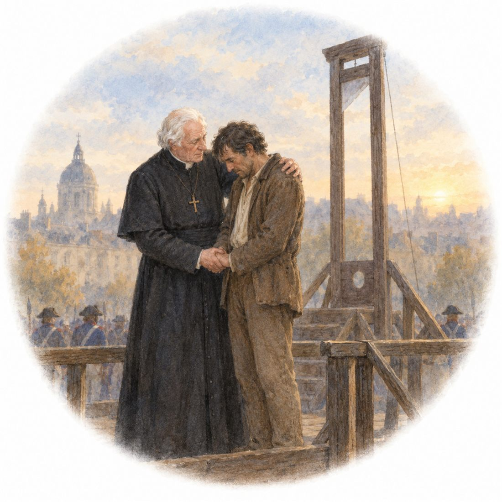

ミリエル司教の思いやりとユゴーの願い

『レ・ミゼラブル』のミリエル司教は、死刑囚に付き添い、断頭台で慰めます。司教は死刑に大きな衝撃を受け、人間に他人の命を奪う権利があるのかと考え、その後も処刑場を避けるようになります。この思いは、作者ユゴー自身の体験と重なります。ユゴーは処刑される人を見て、犯人への憎しみが、苦しむ人への同情に変わったといいます。その体験は、死刑に反対する小説『死刑囚最後の日』を書くきっかけになりました。そこには、囚人や残された家族の苦しみなど、のちの『レ・ミゼラブル』につながる題材も描かれています。
司教が死刑囚を慰める場面は、後に銀の食器を盗んだジャン・ヴァルジャンを許す行動にもつながる重要な場面です。筆者は、司教を宗教上の理想の人物としてだけでなく、苦しむ人を助けようとするユゴーの考えを表す人物と見ています。ヴァルジャンも、心を入れ替えた後、宗教を広める人ではなく、社会で困っている人々を助ける人物になるからです。
（『レ・ミゼラブル百景』鹿島茂、P16の要約）
🔤 英語でひとこと
英単語をクリック（スマホはタップ）すると、日本語が出てきます。
.
日本語訳をひらく
ミリエル司教は、苦しんでいる人々を助けたいというユゴーの願いを表している。
語句の解説
- shows ～
- 「～を表している・示している」。ここでは、人物が作者の考えを「表している」という意味です。主語が1人なので -s がつきます。
- wish to help ～
- 「～を助けたいという願い」。to + 動詞が、前の wish（願い）がどんな願いなのかを説明しています。
- people who are suffering
- 「苦しんでいる人々」。who 以下が、前の people をうしろから説明しています。